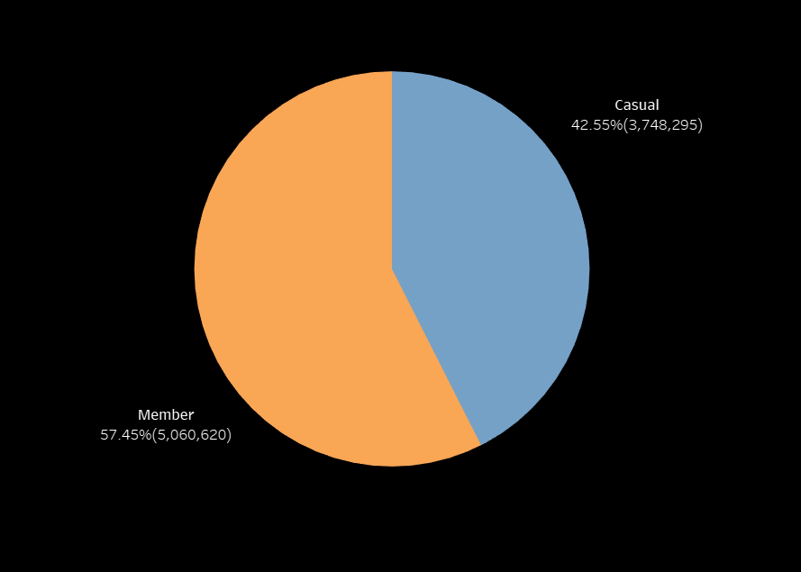

Dashboard
GOAL
What are some effective strategies to advertise the membership program and encourage casual riders to become members?
QUESTIONS TO ANSWER
1. What are the current member rider and casual rider count?
2. What are the member growth throughout the year of 2021 and 2022?
3. What are the differences in service usage between members and casual riders for different time period?
4. Can we identify any patterns or trends in ride time based on start and end station, or bike type?
5. How can the limited data available be used to inform marketing strategies?
DATA ANALYSIS
1. The bike usage of Member Rider vs. Casual Rider

From January 2021 - December 2022, 57.45% of all rides were by members and 42.55% were casual rides.
2. The usage growth rate of Member Rider vs. Casual Rider

Both casual and member riders exhibited a consistent pattern from January 2021 to December 2022,
with high usage observed from May to September in both years, followed by a decrease in usage during January.
The increased usage during May and September can likely be attributed to the start of summer vacation, which attracts
students and tourists to utilize the bike service. Conversely, the lower usage in January could be a result of the break
coming to an end, with people returning to school and tourists resuming their work routines.
3. Top 10 Stations visited by Casual Rider

These are the top 10 stations where the casual riders visit the most.
4. Top 10 Popular Routes by Casual Rider

These are the popular rotues that the casual rider take the most.
5. Bike Type Usage of Member Rider vs. Casual Rider

Among casual riders, the docked bike type exhibits the highest ride frequency, followed by the classic bike type,
with the electric bike type being the least preferred. On the other hand, among member riders, the classic bike type
has the longest ride duration, the electric bike type ranks second, and the docked bike type is the least commonly used.
6. Bike Usage based on Time Period

Among member riders, the highest usage of the service is observed in the afternoon, followed by the evening,
with the morning being the least utilized time period. Similarly, for casual riders, the afternoon is the most
popular time for service usage, while the morning sees the second-highest usage, and the evening has the lowest activity.
FINDING
Currently, the number of members utilizing the service exceeds casual riders. However, the usage percentage of casual riders stands at 42.55%,
indicating a significant potential for conversion to the membership program. This suggests that there is a considerable opportunity to attract a substantial
portion of casual riders and encourage them to become members.
From 2021 to 2022, both member and casual riders experienced peak usage during the months of May to September, which can be attributed to the onset of
summer vacation. During this period, students tend to utilize the service more frequently, and the city attracts a higher number of tourists. Conversely,
the months of January to March marked the lowest point of usage for both years. This decline in usage can be attributed to the resumption of school after
the winter break, as well as the conclusion of holiday seasons like Christmas and Thanksgiving. As people return to their regular school and work routines,
the demand for the bike service decreases.
The top 10 stations that casual riders are most likely to use the service are Dusable Harbot, DuSable Lake Shore Dr&Monroe St, Lake Shore Dr&Monroe St, Millennium Park, Streeter Dr&Grand Ave,
Theater on the Lake, Michigan Ave, and DuSable Lake Shore Dr&North Blvd. Onsite advertisements can be strategically placed at several key locations with high casual rider traffic.
By targeting these areas, advertisers can ensure maximum exposure to the casual rider demographic.
By identifying the popular routes that casual riders take, it is possible to collaborate with famous or popular restaurants and stores located along these
routes. This partnership can involve working with store owners to offer discounts or special promotions for casual riders. By leveraging the visibility and
convenience of these establishments, riders can be incentivized to make stops along their route, enhancing their overall experience and promoting customer
loyalty.
Given that the docked bike type is the most utilized among casual riders, promoting this specific bike type can indeed be an effective strategy to increase
the overall usage of the service. By highlighting the advantages and features of docked bikes, such as their convenience, availability, and reliability,
potential users can be encouraged to opt for this bike type when utilizing the service. Offering targeted promotions or incentives specifically for docked
bikes can further incentivize casual riders to choose this option, ultimately increasing the likelihood of attracting more people to use the service.
CONCLUSION and RECOMMENDATION
Current Membership Program:
Unlimited 45-minute classic bike rides
Up to 5 free unlocks for guests when you ride together
Earn membership extensions and ebike credits with our members-only Bike Angels rewards program
Recommendation on marketing stratgies converting casual rider
Place advertisements at the top 10 stations frequently visited by casual riders.
Enhance Bike Angel rewards points during weekends, considering the higher ridership of casual riders during this time.
Increase Bike Angel rewards points during the afternoon, which corresponds to the peak riding time for casual riders.
Collaborate with popular stores along popular routes, offering discounts to members to boost sales potential.
Extend the bike ride duration, considering that the average ride length for casual riders on classic bikes exceeds 45 minutes.
Introduce special discounts for docked bike types, as they are the preferred choice for casual riders and have the longest average ride length among the three bike types.
Implement special promotions during the high-usage months of May to September to align with increased bike ridership.

Python File
Python code to merge multiple CSV files into a single dataframe and perform data cleaning
Learn more

MySQL File
MySQL code to create a database and extract the required data
Learn more